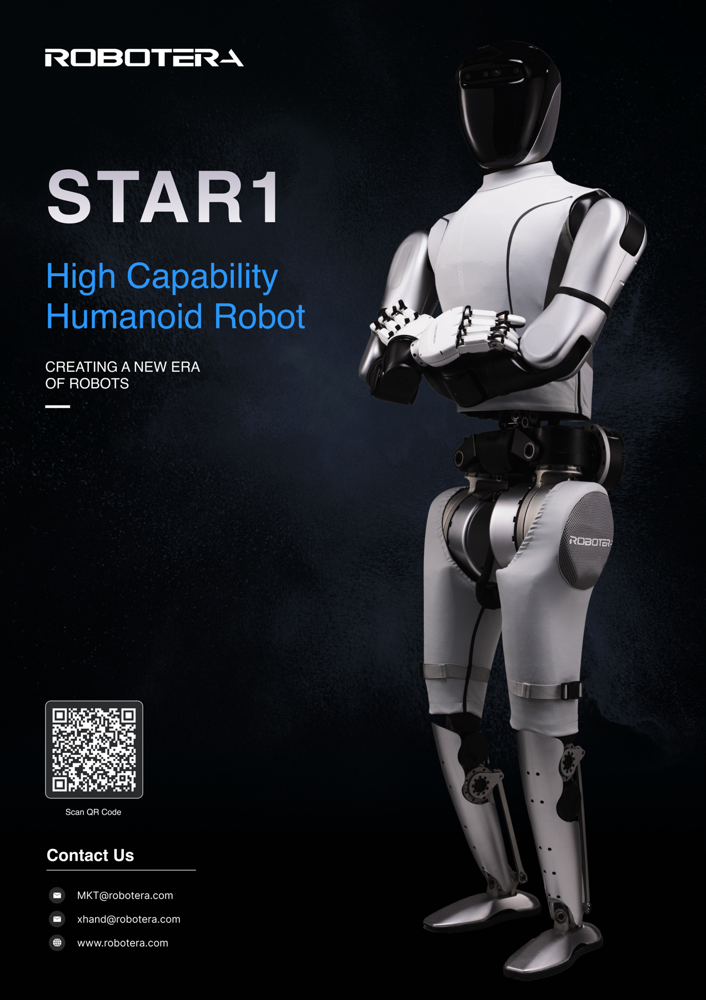

星动 STAR1历史官方手册配置
星动纪元 · 双足人形 · 状态待核实
历史全尺寸科研平台，资料来自仍可取得的官方英文手册，不与当前L7混为一型号。现售与交付状态待核实，不因首页不再重点展示就直接认定停产；图片是原手册封面。

完整规格与依据
身体规格
- 身高
- 171 cm 已核对原文 · 厂商资料
英文手册第2页规格表
本项资料核验 2026-10-24 - 整机重量
- 63 kg 已核对原文 · 厂商资料
英文手册第2页；是否含电池未说明
本项资料核验 2026-10-24 - 自由度
- 55 DoF 已核对原文 · 厂商资料
原手册整机总数；不按分项自行叠加
本项资料核验 2026-10-24 - 末端执行器
- XHAND 1，12主动自由度灵巧手 已核对原文 · 厂商资料
手册末端配置，不由图示推断其他末端兼容性
本项资料核验 2026-10-24
运动与操作
- 操作负载
- ≥ 20 kg 已核对原文 · 厂商资料
原文Arms负载>20 kg；严格大于见本条件，单/双臂及持续工况未说明。单手握力>25 kg与整机载荷160 kg均不代替此项
本项资料核验 2026-10-24 - 移动速度
- 3.6 m/s 已核对原文 · 厂商资料
原手册室外真实场景最大奔跑速度，厂商记录非本库实测，不是持续作业步速
本项资料核验 2026-10-24
电池与工作
- 工作时间
- 待核实
【待继续采集】星动 STAR1 历史官方手册配置的工作时间尚未完成专项深挖。所链仅为产品入口，不是该参数未公开的证明；后续须核对该代手册/配置表或报价，不能从其他代际或零值补齐。
专项核验尚未完成；相关链接不表示厂商从未披露。 - 电池能量
- 待核实
【待继续采集】星动 STAR1 历史官方手册配置的电池能量尚未完成专项深挖。所链仅为产品入口，不是该参数未公开的证明；后续须核对该代手册/配置表或报价，不能从其他代际或零值补齐。
专项核验尚未完成；相关链接不表示厂商从未披露。 - 电池容量
- 待核实
【待继续采集】星动 STAR1 历史官方手册配置的电池容量尚未完成专项深挖。所链仅为产品入口，不是该参数未公开的证明；后续须核对该代手册/配置表或报价，不能从其他代际或零值补齐。
专项核验尚未完成；相关链接不表示厂商从未披露。
感知与开发
- 感知配置
- 触觉传感器、3D相机、麦克风阵列、面部交互屏 已核对原文 · 厂商资料
原手册感知描述，无数量/完整型号
本项资料核验 2026-10-24 - 计算平台
- Intel 高性能处理器 + NVIDIA Orin；275 TOPS，支持外接 已核对原文 · 厂商资料
原手册未给精确芯片型号、内存及外接配置边界
本项资料核验 2026-10-24 - 二次开发
- 待核实
【待继续采集】星动 STAR1 历史官方手册配置的二次开发尚未完成专项深挖。所链仅为产品入口，不是该参数未公开的证明；后续须核对该代手册/配置表或报价，不能从其他代际或零值补齐。
专项核验尚未完成；相关链接不表示厂商从未披露。
采购信息
- 美元报价
- 待核实
【待继续采集】星动 STAR1 历史官方手册配置的美元报价尚未完成专项深挖。所链仅为产品入口，不是该参数未公开的证明；后续须核对该代手册/配置表或报价，不能从其他代际或零值补齐。
专项核验尚未完成；相关链接不表示厂商从未披露。 - 人民币报价
- 待核实
【待继续采集】星动 STAR1 历史官方手册配置的人民币报价尚未完成专项深挖。所链仅为产品入口，不是该参数未公开的证明；后续须核对该代手册/配置表或报价，不能从其他代际或零值补齐。
专项核验尚未完成；相关链接不表示厂商从未披露。